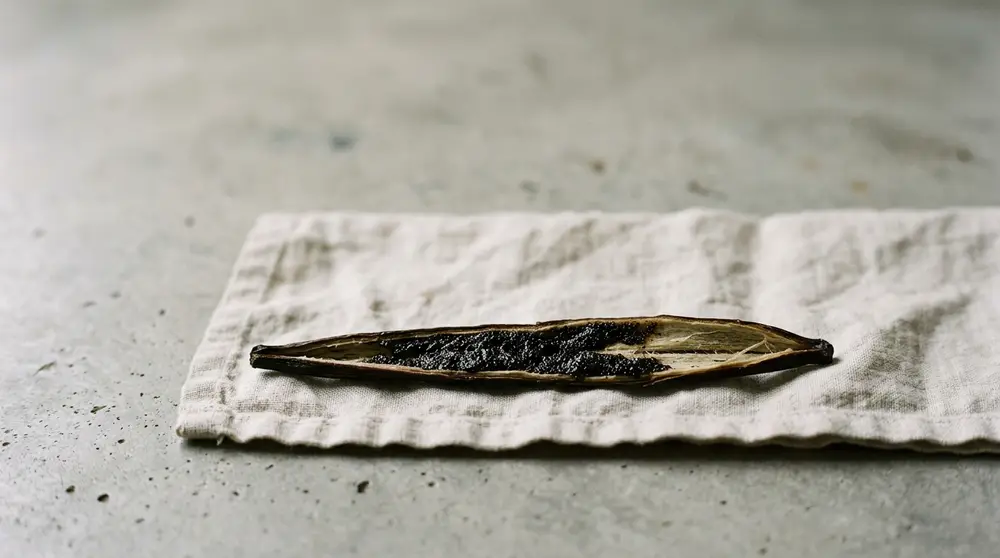
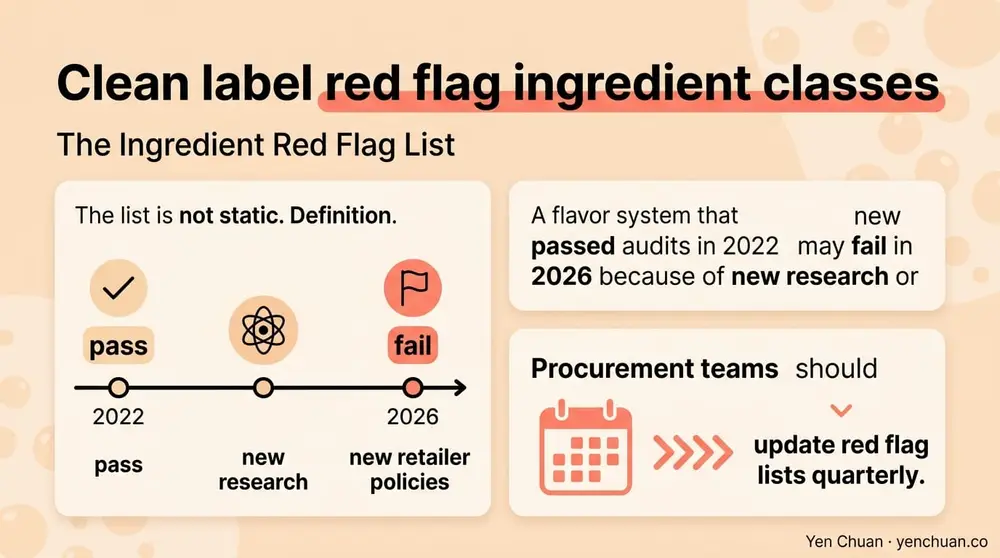
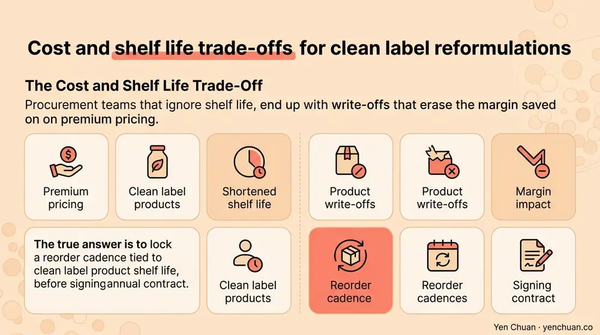

Articles / Business & sourcing
Clean Label Beverage Ingredients: B2B Buyer Guide
2026-04-18 · Industry Trends, Sourcing

Original public content from Yen Chuan. Product claims and specifications remain subject to confirmation by the company.
"Clean label" sits on almost every 2026 procurement RFQ, yet two buyers using the phrase often mean two different things. One wants no artificial colors. Another wants a full allergen and GMO-free audit. A third is really asking about recognizable ingredients a customer can read on the back of the cup. For B2B buyers sourcing powders, syrups, creamers, and toppings, that ambiguity is expensive.
This guide explains what clean label beverage ingredients actually are in 2026, which compounds are now on buyer blacklists, how the category connects to pricing and shelf life, and the questions to put on your next supplier questionnaire. The aim is simple: fewer surprises on the ingredient declaration, fewer customer complaints, smoother retail listings.
What "Clean Label" Really Means in 2026
There is no legal definition of clean label in the United States, the European Union, or most Asian markets. Instead, the term describes a cluster of buyer expectations that have hardened over the last five years.
According to Mintel's 2024 Global Food & Drink Trends, 54% of U.S. consumers now check ingredient lists before buying beverages, up from 37% in 2018. The same research shows buyers prioritize "ingredients I recognize" above "organic" or "natural" claims. Clean label, in practice, means readable.
A working definition for procurement teams looks like this:
- A short, plain-English ingredient deck with no unfamiliar chemical names
- No artificial colors, flavors, or sweeteners
- No preservatives the target market has flagged (sodium benzoate, potassium sorbate in beverages, BHA, BHT)
- No partially hydrogenated oils or undeclared trans fats
- Allergen and GMO status clearly disclosed
- Processing aids documented on request, even if exempt from labeling
The shift from marketing slogan to operational spec is what makes 2026 different. Retailers like Whole Foods, Sprouts, and regional Asian grocery chains are codifying the criteria in their vendor manuals, and cafe groups with more than 50 locations are adopting internal clean label standards as part of franchise agreements.
The Ingredient Red Flag List
Ingredients that routinely disqualify beverage products in 2026 clean label audits include:
| Ingredient Class | Common Example | Why It's Flagged |
|---|---|---|
| Artificial colors | Red 40, Yellow 5, Blue 1 | Children's health concerns, EU warning labels |
| Artificial sweeteners | Aspartame, sucralose, saccharin | Consumer perception, 2023 WHO IARC review of aspartame |
| Preservatives | Sodium benzoate, potassium sorbate | Benzene formation risk with ascorbic acid |
| Emulsifiers | Polysorbate 80, carrageenan (degraded) | Gut health research |
| Hydrogenated oils | Partially hydrogenated palm/soy oil | Trans fat content |
| Flavor enhancers | MSG, disodium inosinate | Consumer aversion |
| Non-dairy bases | Sodium caseinate with corn syrup solids | Allergen ambiguity |
The list is not static. A flavor system that passed audits in 2022 may fail in 2026 because of new research or new retailer policies. Procurement teams should update red flag lists quarterly.

Clean Label in Bubble Tea and Specialty Beverages
The bubble tea category has a specific clean label problem: non-dairy creamer. Traditional creamers rely on corn syrup solids, sodium caseinate, and hydrogenated vegetable oil, which together cover three of the red flag categories above.
Modern reformulations replace these with coconut-based fats, tapioca starch, and natural emulsifiers like sunflower lecithin. Taste and foam stability are close to the traditional product when the formulation is done well, though the cost is typically 20 to 35% higher. For operators pricing drinks at $5.50 to $7.50, the per-cup impact is cents, not dollars, which is why clean label creamers are spreading faster in premium chains than in discount franchises.
Tapioca pearls are mostly clean by default, made from cassava starch, water, and brown sugar. The risk is in pearls that rely on artificial caramel color, titanium dioxide (banned in the EU since 2022 per EFSA's 2021 assessment), or pearls that use propylene glycol in the syrup soak. Ask suppliers for the full ingredient deck of the finished soaked pearl, not just the dry pearl.
Syrups are the category most buyers audit first. Common red flags are high-fructose corn syrup, artificial flavor blends, potassium sorbate, and sulfites in fruit purees. Clean label syrups use cane sugar or honey, natural flavor extracts, and vacuum-pasteurization instead of chemical preservation. Shelf life drops from 24 months to 12 to 18 months, which changes procurement cadence.
For a head-to-head comparison on RSPO-certified versus conventional creamer pricing, see our RSPO vs Non-RSPO Creamer analysis.
The Cost and Shelf Life Trade-Off
Clean label reformulations typically raise ingredient cost and lower shelf life. A general framework:
- Clean sweeteners (cane sugar, honey, monk fruit): 1.3x to 2.5x the cost of high-fructose corn syrup
- Natural flavors: 2x to 4x the cost of artificial flavor blends
- Plant-based preservatives (rosemary extract, green tea extract, acerola): 3x to 6x the cost of sodium benzoate
- Natural colors (beet, carrot, spirulina): 4x to 10x the cost of synthetic colors
Shelf life effects are similarly material. A flavored syrup that holds for 24 months on potassium sorbate may only hold 12 months on green tea extract. A creamer with hydrogenated oil can sit at ambient for 18 months. A clean coconut-fat creamer may need refrigerated logistics and a 9 to 12 month window.
Procurement teams that ignore shelf life end up with write-offs that erase the margin saved on premium pricing. The honest answer is to lock in a reorder cadence tied to clean label product shelf life before signing annual contracts.

How to Audit a Clean Label Claim
Supplier claims are only as good as the documentation behind them. A disciplined audit uses four layers of evidence.
Layer one: the full ingredient declaration. Ask for the finished product ingredient statement exactly as it will appear on a consumer pack, in the buyer's destination market format (FDA, EFSA, FSSAI, JFDA). Sub-ingredients for compound items like "natural flavor" should be disclosed under NDA if not on the public label.
Layer two: processing aids and incidental additives. U.S. and many Asian labeling rules exempt processing aids below certain thresholds. Clean label means disclosing them anyway. Ask whether the product uses anti-foaming agents, anti-caking agents in powders, or extraction solvents.
Layer three: allergen, GMO, and origin statements. Request an allergen statement, a non-GMO declaration with supporting documentation, and country of origin for each primary ingredient. For bubble tea, this typically covers dairy, soy, and sulfites.
Layer four: third-party certification where it exists. Non-GMO Project Verified, USDA Organic, and the emerging Clean Label Project certifications add weight. Clean Label Project in particular tests finished products for heavy metals, pesticides, and microplastics, which no ingredient declaration can reveal.
For broader supplier vetting beyond clean label, our milk tea supplier guide covers pricing negotiation and quality audits end to end. For U.S. market buyers, the FDA nutrition labeling requirements intersect with clean label work.
The 2026 Supplier Questionnaire
The shortlist below is what a clean-label-aware buyer now routinely asks before issuing a purchase order. A supplier who answers all seven quickly, with documents attached, is worth prioritizing.
- Provide the finished product ingredient declaration in FDA and EU formats.
- List all processing aids, even those below labeling thresholds.
- Supply a current allergen, GMO, and country-of-origin statement.
- Disclose any artificial colors, flavors, or chemical preservatives in the formulation.
- Confirm whether the product contains partially hydrogenated oils or carrageenan.
- Provide third-party certifications (Non-GMO, Organic, Clean Label Project) with current expiration dates.
- State the shelf life, storage conditions, and any ambient-to-cold logistics requirements.
This list, combined with a site visit or virtual factory audit, filters out most of the problems that end up as customer complaints or retailer delistings later.
Clean label buying is not a marketing decision. It is a risk-management decision that determines which retail doors stay open, which franchise contracts close, and which batches get pulled. Treat it as a procurement discipline, not a trend.
Sources
- Mintel Global Food and Drink Trends 2024
- EFSA: Titanium dioxide no longer considered safe as a food additive (2021)
- U.S. FDA Food Labeling and Nutrition Guidance
- Clean Label Project research and certification
- Grand View Research: Clean Label Ingredients Market Report 2024
About Yen Chuan
Yen Chuan has been at the heart of Taiwan's bubble tea industry for over 20 years, supplying premium powders, syrups, tapioca pearls, and tea leaves to thousands of boba shops worldwide. With an in-house R&D lab and a commitment to quality ingredients, Yen Chuan is more than a supplier — we're your partner in the boba business. Our clean label lineup has grown three-fold since 2023 as regional chains and European importers have moved reformulation up the roadmap, and our R&D team will co-develop ingredient decks to meet specific retailer audit requirements.
Building a clean-label beverage program and need ingredient documentation you can actually hand to a retailer? Browse our catalog or talk to our sourcing team — we ship from Taiwan to more than 40 countries and will support your audit from spec sheet to batch certificate.
Frequently Asked Questions
Q: Is "clean label" a legally defined term? A: No. Clean label has no legal definition in the U.S., EU, or most Asian markets. It is a buyer-driven standard shaped by retailer vendor manuals, consumer research, and industry reports rather than regulation, which is why supplier documentation matters more than the marketing claim.
Q: What ingredients disqualify a beverage from clean label status? A: The most common disqualifiers are artificial colors like Red 40 and Yellow 5, artificial sweeteners such as aspartame and sucralose, preservatives like sodium benzoate and potassium sorbate, partially hydrogenated oils, and flavor enhancers like MSG. Retailer-specific lists can extend this further.
Q: How much more expensive are clean label beverage ingredients? A: Clean sweeteners cost 1.3x to 2.5x more than high-fructose corn syrup, natural flavors run 2x to 4x artificial blends, and natural preservatives can cost 3x to 6x more than chemical alternatives. Overall formulation cost typically rises 20 to 35%.
Q: Do clean label products have shorter shelf life? A: Yes in most cases. Flavored syrups may drop from 24 months to 12 to 18 months, and coconut-based creamers often move from ambient 18 month stability to refrigerated 9 to 12 months. Reorder cadence should be planned against the lower figure.
Q: What certifications help prove a clean label claim? A: Non-GMO Project Verified, USDA Organic, and Clean Label Project certification are the most widely recognized third-party marks in beverage procurement. Clean Label Project in particular tests finished product for heavy metals, pesticides, and microplastics, adding a layer of evidence beyond the ingredient statement.